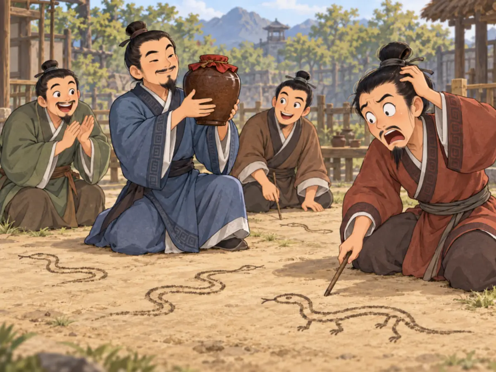

画蛇添足
Drawing Legs on a Snake

While one man is still adding feet to his snake, another has finished his drawing and picked up the wine prize.
古代Chǔ · 战国时期的重要诸侯国之一。有一次祭祀以后，几个人得到了一壶酒。可是，酒只有这么一点。“大家一起喝，每个人都喝不到多少。”有人说，“要是一个人喝，那就够了。”于是，他们想出了一个办法：比赛画蛇。谁先在地上把蛇画完，谁就喝这壶酒。大家立刻动手。 其中一个人画得特别快。别人还没有画完，他的蛇已经画好了。他赢了。酒已经到了他的手里。可是他没有马上喝。他看看四周，发现其他人还在低头画蛇，觉得自己时间多得很。他一只手拿着酒，另一只手又开始在自己的蛇上画起来。“我这么快，”他说，“还来得及给蛇画几只脚呢！”于是，他画了一只脚，又准备画下一只。 这时候，另一个人把自己的蛇画完了。那个人看看他的画，又看看正在往蛇身上添的脚，说：“蛇本来就没有脚，你怎么能给它画脚呢？”说完，他把那壶酒拿了过去，自己喝了。第一个人只能看着地上那条还没有画完脚的蛇。刚才，他明明已经赢了。蛇已经画完，酒也已经拿到了手里。他什么都不需要再加。只需要停下来。 这个故事出自古书Zhànguó Cè · 汇集战国时期各国谋略、游说和政治故事的一部古书。。在原来的故事里，有人用“画蛇添足”来劝一位已经打了胜仗的将军：已经得到很大的胜利，如果还不知道什么时候该停，继续往前，反而可能把已经得到的东西也失去。后来，“画蛇添足”就成了一个一直用到今天的成语。蛇画好了，再添上几只脚，并没有让它变得更好。那几只多出来的脚，反而让他丢掉了已经赢到手的酒。
After a ritual in the ancient state of Chǔ · 楚国 · One of the major states of ancient China during the Warring States period., several attendants were given one cup of wine. There was only one problem: one cup was not enough for everyone. “If we divide it among all of us,” someone said, “none of us will get much. But it would be plenty for one person.” So they came up with a contest. Each person would draw a snake on the ground. Whoever finished first would win the wine. Everyone began drawing. One man was especially fast. Before anyone else had finished, his snake was already complete. He reached for the cup of wine. He had won. But instead of drinking it, he looked around and saw that the others were still drawing. There was plenty of time, he thought. Holding the cup in one hand, he picked up his drawing tool with the other. “I’m so fast,” he said, “I can even give my snake some feet.” So he began adding them. One foot. Then another. Before he could finish, a second man completed his snake. He looked at the first drawing, then at the extra feet being added to it. “A snake doesn’t have feet,” he said. “How can you give it feet?” Then he took the cup away and drank the wine. The first man stared at his unfinished snake-with-feet. A moment earlier, the wine had already been his. His snake was finished. He did not need to make it fancier, longer, or more impressive. He only needed to stop. The story appears in an ancient Chinese book called the Zhànguó Cè · 《战国策》 · An ancient collection of political arguments, strategies, and stories from the Warring States period.. In the original story, it was told as advice to a general who had already won a great victory but wanted to keep attacking. The message was easy to picture: when something is already complete, adding more does not always make it better. Sometimes the extra part is exactly what makes you lose what you already had. That is why Chinese still uses the expression huà shé tiān zú—“draw a snake and add feet.” The man lost the wine not because his snake was bad. He lost it because he did not know when to stop.